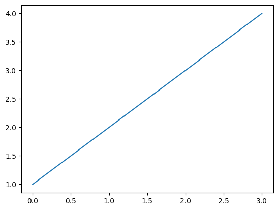
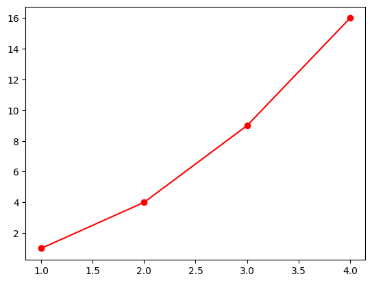
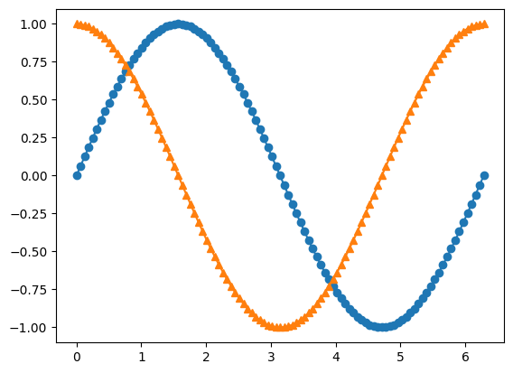
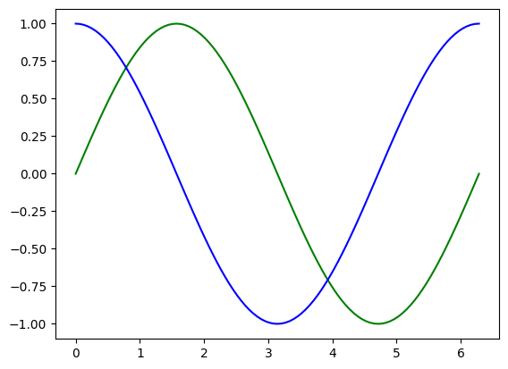
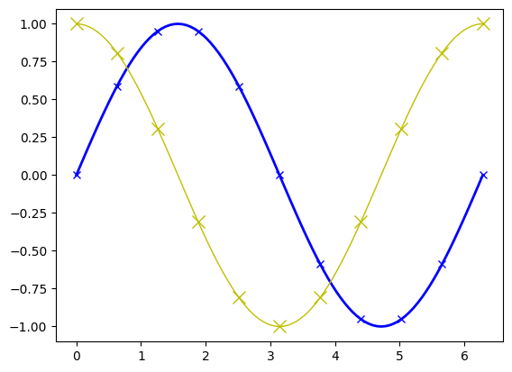
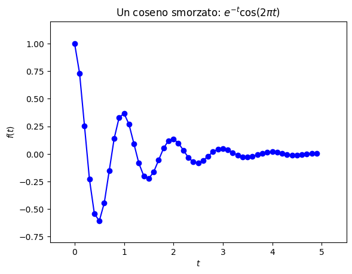
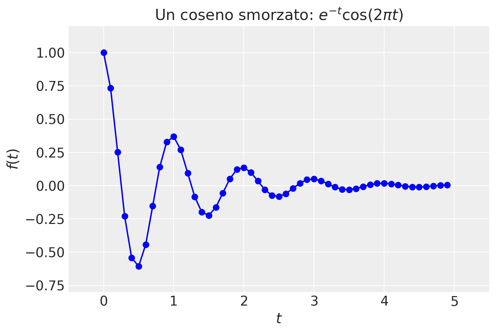

Introduzione a matplotlib
Contents
Introduzione a matplotlib#
Grafici con matplotlib#
La libreria matplotlib consente di disegnare grafici 2D in vari modi – si veda la pagina web Pyplot tutorial. Le quantità da plottare sono ndarrays di numpy, ma anche una lista viene trasformata direttamente in un array quando viene passata come argomento del plot. Esempio:
import matplotlib.pyplot as plt
import numpy as np
import arviz as az
plt.plot([1, 2, 3, 4])
plt.show()

plt.plot([1, 2, 3, 4])
plt.show()

Una lista unica viene interpretata come la funzione da plottare lungo y, ma se ne passiamo due la prima viene interpretata come asse x. Infine, una stringa come terzo parametro viene interpretata come un descrittore per il colore della linea, lo stile, ecc.
Esempio: disegno di dati contenuti in due liste con linea continua (parametro ‘-’) e pallini rossi (parametro ‘or’)…
plt.plot([1, 2, 3, 4], [1, 4, 9, 16],'or-')
plt.show()

Oppure si possono definire due o più ndarrays, da passare al plot:
x=np.linspace(0.0,2.0*np.pi,101)
y=np.sin(x)
z=np.cos(x)
plt.plot(x,y,'o-')
plt.plot(x,z,'^-')
plt.show()

Si possono definire varie funzioni da plottare con un unico comando (nota il colore differente prima del simbolo):
plt.plot(x,y,'g-',x,z,'b-')
plt.show()

La stringa (opzionale) che appare come terzo parametro (se non specificata, disegna una linea blu) descrive il colore, un eventuale marker e lo stile della linea in un unico parametro. È possibile definire i colori comuni con le lettere seguenti:
b: blue
g: green
r: red
c: cyan
m: magenta
y: yellow
k: black
w: white
Il parametro successivo, se presente, rappresenta il tipo di linea e l’eventuale punto (eventualmente entrambi, se presenti). I simboli corrispondenti sono:
-: solid line style
–: dashed line style
-.: dashed-dotted line style
:: dotted line style
.: point marker
,: pixel marker
o: circle marker
v: triangle down marker
^: triangle up marker
<: triangle left marker
s: square marker
p: pentagon marker
*: star marker
h: hexagon marker
+: plus marker
x: x marker
D: diamond marker
|: vertical line marker
_: horizonthal line marker
Alcuni dei possibili parametri opzionali che è possibile passare alla funzione plot sono:
alpha: trasparenza della linea (float: 0.0 = trasparente, 1.0 = opaca)
color (o “c”): colore della linea
linestyle (o “ls”): stile della linea
linewidth (o “lw”): larghezza della linea (float)
marker: tipo di marker
markersize (o “ms”): dimensione del marker (float)
markevery: ogni quanti punti mettere un marker (ma si possono specificare anche markers singoli, ecc.)
Esempio:
plt.plot(x,y,linestyle='-',linewidth=2.0,color='b',marker="x",markevery=(10))
plt.plot(x,z,ls='-',lw=1.0,marker='x',markersize=10.0,color='y',markevery=(10))
plt.show()

È ovviamente possibile inserire nel grafico un titolo, delle labels sugli assi, una griglia, del testo in posizione arbitraria, ecc. Una delle caratteristiche di mathplotlib è quella di poter utilizzare il rendering in \(\LaTeX\) delle stringhe, facendole precedere da una “r” (che sta per “raw”) per indicare a Python che questo è un codice TeX. Per esempio:
def f(t):
return np.exp(-t) * np.cos(2*np.pi*t)
t1 = np.arange(0.0, 5.0, 0.1)
plt.plot(t1, f(t1), 'bo-')
plt.title(r"Un coseno smorzato: $e^{-t}\cos(2\pi t)$")
plt.xlabel(r"$t$")
plt.ylabel(r"$f(t)$")
plt.xlim(-0.5,5.5)
plt.ylim(-0.8,1.2)
plt.show()

È possibile cambiare lo stile del grafico e la palette di colori rispetto al default di matplotlib. Per esempio:
%config InlineBackend.figure_format = 'retina'
az.style.use("arviz-darkgrid")
plt.style.use('tableau-colorblind10')
plt.plot(t1, f(t1), 'bo-')
plt.title(r"Un coseno smorzato: $e^{-t}\cos(2\pi t)$")
plt.xlabel(r"$t$")
plt.ylabel(r"$f(t)$")
plt.xlim(-0.5,5.5)
plt.ylim(-0.8,1.2)
plt.show()
